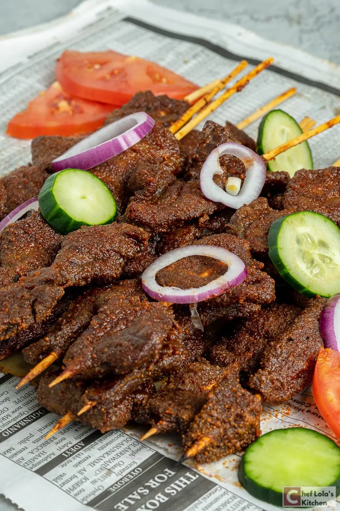
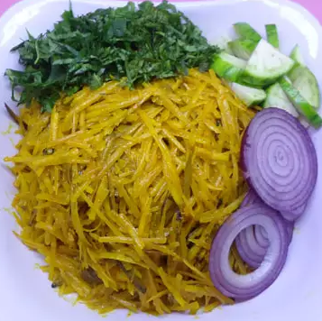

Learn to makeFood
About
Welcome to My Website, this is to showcase rich and diverse cuisine of Nigeria. My website is dedicated to showcasing the delicious flavors and traditional cooking techniques that make Nigerian cuisine so unique and exciting, I believe that food is an integral part of cultural heritage, and that sharing it with the world is a way to preserve and promote that heritage. Through our recipes, cooking tips, and stories, I hope to introduce you to the vibrant and colorful world of Nigerian cuisine. From jollof rice to egusi soup, our recipes are authentic, delicious, and easy to make. We believe that anyone can cook Nigerian food, and we're here to help you do just that. Whether you're a seasoned chef or a beginner in the kitchen, we have something for everyone. I am very passionate about Nigerian food, and excited to share my knowledge and expertise with you. I believe that food brings people together, and hope that my website will be a place where you can connect with others who share your love of Nigerian cuisine. Thank you for visiting My Website. I hope that you enjoy exploring the flavors of Nigeria and that My website inspires you to cook, eat, and share delicious food with your family and friends.
FoodMenu

Jollof rice
Jollof rice, a staple of West African cuisine, is a flavorful dish made with rice, tomatoes, onions, peppers, and a variety of spices. With its straightforward preparation, this dish is ideal for home cooking and the end result is nothing short of mouthwatering.

Suya
Suya, a delectable Nigerian delicacy, is a spicy grilled meat dish reminiscent of shish kebab but with a uniquely flavorful twist. The dish is prepared using thinly sliced skewered beef that has been expertly seasoned.

Okro Soup
Okra soup is a commonly served soup in West Africa, particularly in Nigeria. It is typically made of okra, onions, habanero pepper, red bell pepper, locust bean, and various seasonings.

Moi Moi
Moi moi, a classic Nigerian dish, is a flavorful steamed main course created by combining peeled black-eyed peas with ingredients such as onions, peppers, fish, crayfish, boiled egg and other flavorful seasonings.

Beef Stew
Beef stew is one of the most well-known and widely enjoyed stews in Nigeria, which is prepared using a variety of meat cuts such as beef, tripe, and beef liver. This dish is commonly referred to as tomato stew due to its tomato-based recipe.

Pounded Yam
Pounded Yam is a commonly consumed food in numerous West African households, but it is rarely eaten on its own. Rather, it is typically served alongside a range of delectable African soups and stews such as Egusi and Okra Soup.

Egusi Soup
Egusi is a soup that is widely consumed in West Africa and is packed with essential nutrients, protein, and fat. Its popularity in Nigeria is largely due to its delicious pairing with pounded yam

Abacha
African salad (Abacha food) is a delicious west African food that is native to the ndi Igbo. This dish can easily be prepare within 15 minutes and it requires just cassava flakes, palm oil, crayfish, ugba and an assortment of spices.
MyInfo
Patrick Nwagulu
I am a Second Year Beng (HONS) Computing F/T Student that studies at Edinburgh Napier University